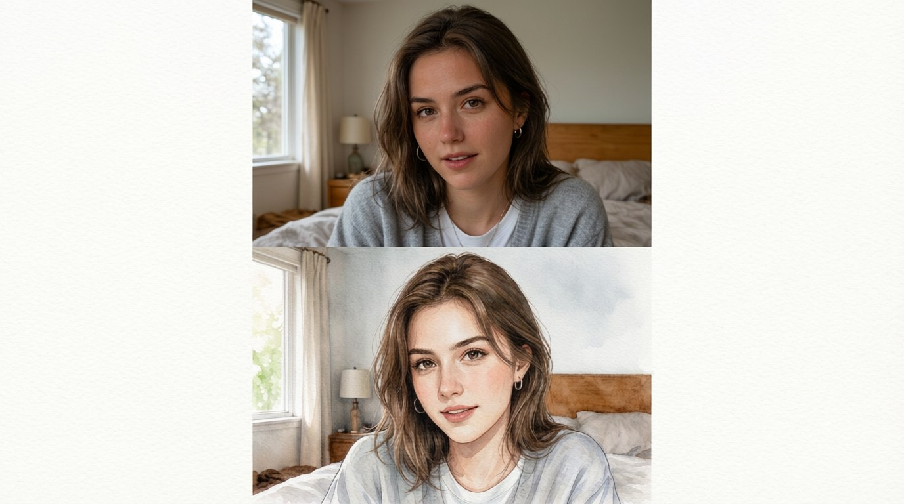
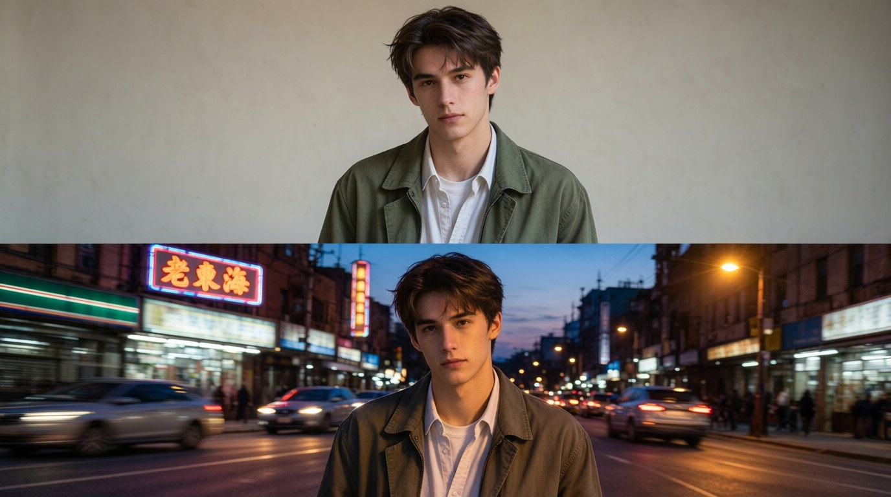
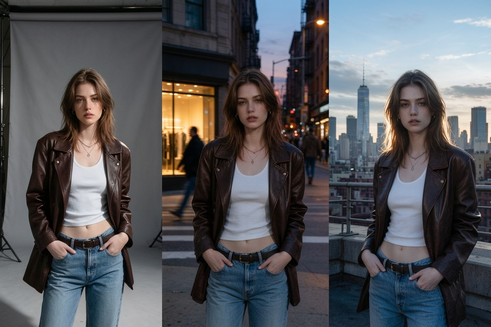
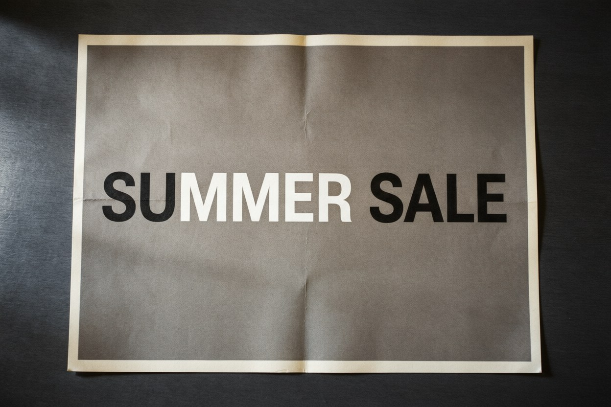
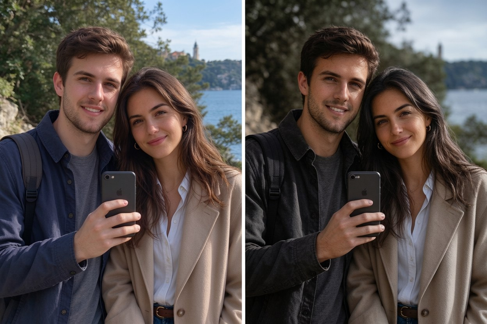
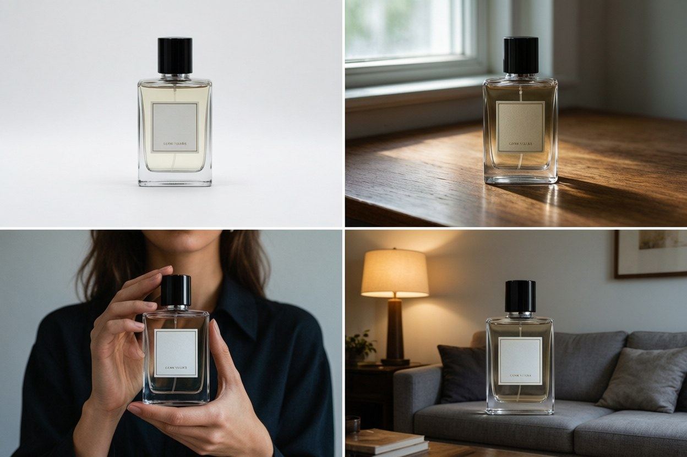
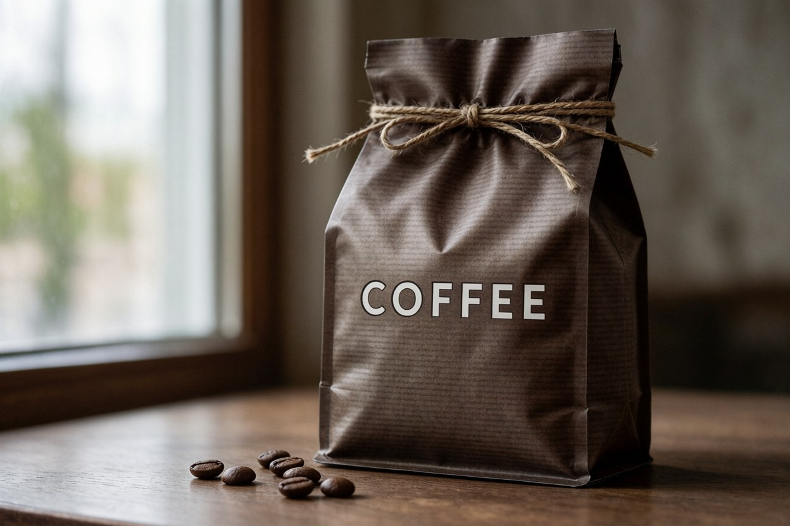
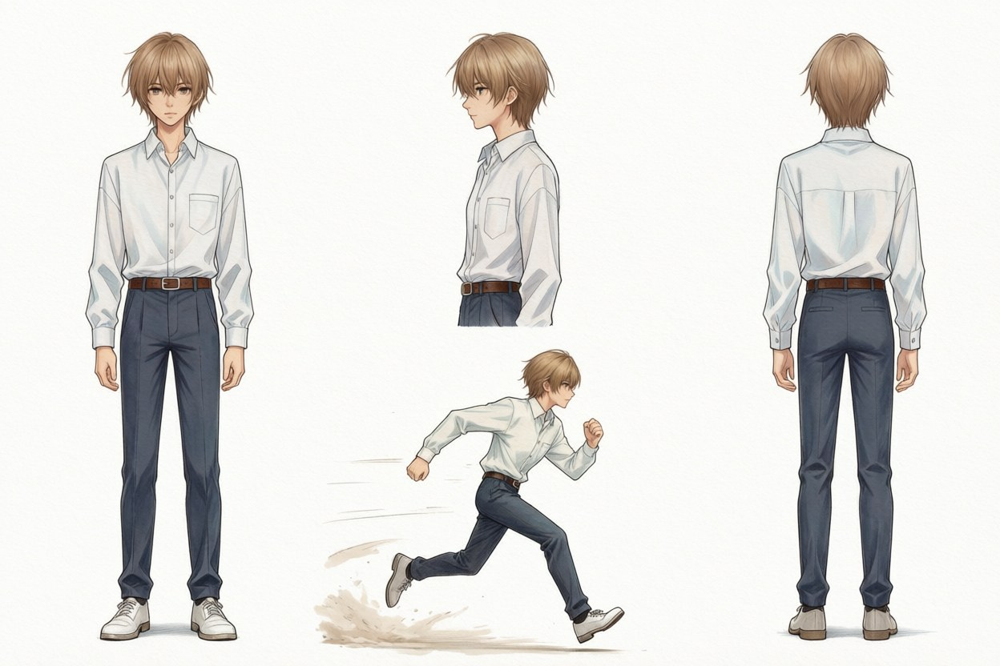
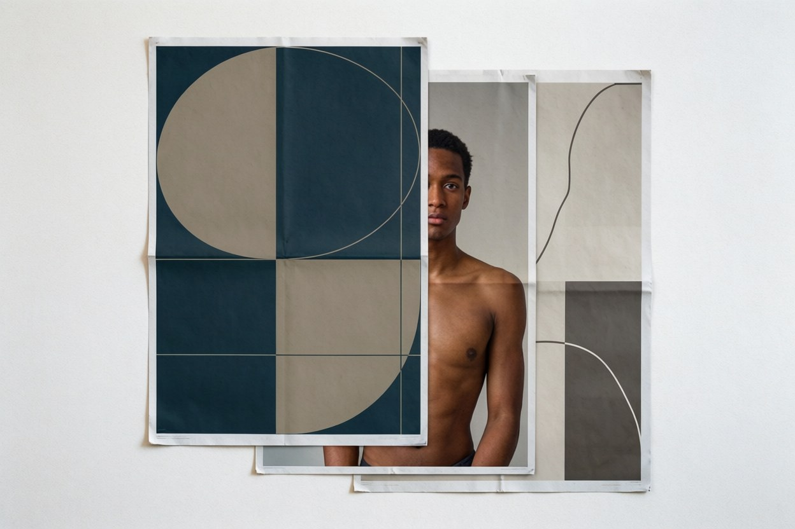
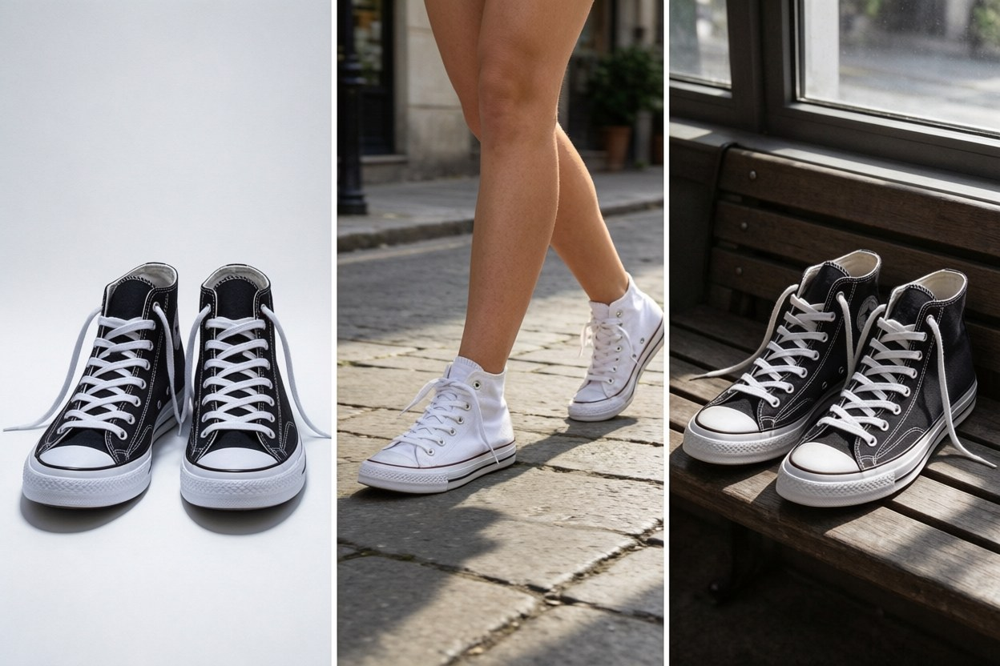

AI Photo Editor & Image Generator
Upload a photo and describe the change in plain language, or start from a prompt. Keep the same face, product, or character across every image, add readable text, and export up to 4K.
Upload or type a prompt — no app, no install; it runs right in your browser.
10 free credits on sign-up · Output at 1K, 2K, or 4K

The same portrait, restyled into a watercolor with a text instruction.
or drop a file here — or paste a screenshot with Ctrl+V
Supports JPG, PNG, WebP, HEIC • Max 10MB • Sign in to start — 10 free credits on sign-up
By uploading an image you agree to our Privacy Policy and Terms of Use.
More Ways to Handle Text in Images
Copy text out of an image, erase text from it, or take watermarks off your photos — every PixPurge tool runs on the same one-click flow.
Nano Banana 2.1
Google's newest image model — consistent characters, products, and readable text up to 4K.
Copy Text from Image
Read the text out of a photo or screenshot and copy it — no retyping.
Remove Watermark from Photo
Erase watermarks, logos, and date stamps from your photos — background kept intact.
Edit Photos with Text Instructions in the AI Photo Editor
Upload a photo, then describe the change the way you would describe it to a person. "Turn this snapshot into a watercolor." "Put the same model on three different streets." "Change the packaging color to navy."
The editor reads the instruction, changes the image, and leaves everything else alone. You can keep stacking instructions without starting over: each new sentence builds on the last result.
Vague instructions get vague results. Name the thing you want changed and what it should become, and you will usually get it in one pass.

Generate Images from a Prompt in the Same AI Photo Editor
Start with nothing but words. Describe the picture you want, including the subject, the setting, the lighting, and the style, and the generator renders it. Add a reference image when a specific face, product, or logo has to appear in the result.
Every render comes out at 1K, 2K, or 4K, and running the same prompt again gives you variations to choose from.
Some prompts work better than others. Naming the material, the lens, and the light gets you closer on the first run than a list of adjectives. If a render misses, change one thing and run it again instead of rewriting the whole prompt.
Why the AI Photo Editor Keeps Faces and Products Consistent
Consistency is where most image tools fall apart. Upload one or more reference images of the same person, product, or character, and that identity holds while you change the scene, the pose, the outfit, or the background. Move a shot from a studio to a street corner and the face does not drift. Swap the colorway on a product and the logo stays where it was. This is what makes the tool usable for anything bigger than a one-off image: a catalog, a campaign, a comic, or a week of ads with the same model in every frame.

Put Readable Text Inside Images with the AI Photo Editor

Posters, labels, packaging, price cards, and social covers all need the text spelled right and legible. Describe the wording in your prompt and it renders inside the image, including localized text in several languages.
Short strings work best: a headline, a price, a product name, a short label. Full paragraphs of body copy are a weak spot of every image model right now, this one included, and our model pages say so instead of pretending otherwise.
Export up to 4K from the AI Photo Editor
Render at 1K for quick drafts, 2K for social and web, 4K for print and large displays. Standard aspect ratios are supported, including the wide and panoramic frames at 1:4, 4:1, 1:8, and 8:1, where this model fixes the tiling artifacts that used to appear at 2K and 4K.
Wide frames: 1:4 · 4:1 · 1:8 · 8:1
Restyle and Restore Photos in the AI Photo Editor
Not every job is generation. The same editor replaces a background, cleans up objects, extends a photo past its original frame, restyles a snapshot into an illustration, or rescues a product shot taken under bad light.
Upload first, describe second. Describing the end state works better than describing the steps to reach it, and a usable first result does not require any prompt engineering.

What You Can Make with an AI Photo Editor





Product and e-commerce photos — the same item on a white background, on a desk, in a model's hands, and in a lifestyle scene, with the packaging text unchanged.
Social content — one character carrying a week of posts while the setting changes every day.
Posters and packaging — headline, price, and product name rendered inside the design and spelled correctly.
Character design — the face and the outfit stay fixed while the world around them changes.
Brand campaigns — a single reference image, carried across every size and crop you need.
Photo restyling — a phone snapshot that ends up looking editorial.
Supported Models
One workspace, several image models. Pick the one that fits the job and switch without uploading your files again.
| Model | Best for | Output |
|---|---|---|
| Nano Banana 2.1 | Character and product consistency, multi-reference editing, short text | 1K / 2K / 4K |
| Nano Banana 2 | Fast generation and everyday edits | 1K / 2K / 4K |
| Nano Banana Pro | Detailed, high-fidelity renders | 1K / 2K / 4K |
| GPT Image 2.5 | Precise edits and crisp text rendering | 1K / 2K / 4K |
| Seedream 5.0 Flash | Fast, low-cost generation and edits | 1K / 2K |
| Qwen Image 2.1 | Typography, transparent assets, precise local edits | 1K / 2K |
| FLUX.2 | Photorealistic scenes and portraits | 1K / 2K |
How the AI Photo Editor Works
Upload or describe
Drop in one or more reference images, or start with a prompt.
Say what to change
Plain language, no syntax needed. "Put her on a rooftop at dusk." "Make the label green."
Pick a size and export
Choose 1K, 2K, or 4K, download, and keep refining in the same conversation.
Explore What Others Created
A browsable gallery of recent generations, each shown with the prompt that produced it, so you can judge the tool on real output before you sign up. Every prompt page links back to the editor, and you can run the same idea with your own photo.
When an AI Photo Editor Is the Wrong Tool
Some jobs this tool should not take, so here is the honest list.
Short strings, headlines, prices, and product names come out reliably. Full paragraphs still come out blurred, so take long layouts to a typesetting tool.
Google's own limitation list records occasional errors in spatial localisation, left and right included. Where the sides matter, generate a few options and pick one.
This is a generative model, not a retouching suite. Pen tools and layer masks still belong in an image editor built for that job.
Google notes rare cases where the subject's pose from the input image carries into the output, and it does not always move when you ask it to.
Saying this out loud costs us nothing. Someone who tries once, gets the wrong result, and leaves is gone for good. Someone who knows the limits beforehand comes back for the jobs this tool is actually good at.
The list is short because the model is good at everything else on this page.
Frequently Asked Questions
Start Editing Free
No install. Upload a photo or type a prompt and see the first result in seconds. Every new account starts with 10 free credits.
Upload a photo or type a prompt10 free credits · Output at 1K, 2K, or 4K
Nano Banana is a product name of Google. PixPurge is an independent product and is not affiliated with, endorsed by, or sponsored by Google.